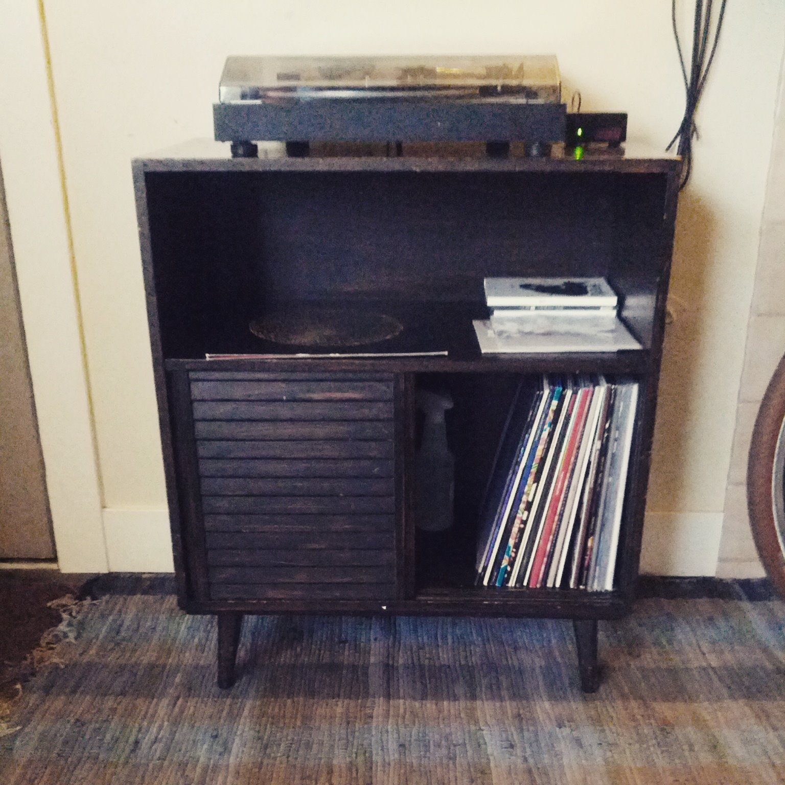
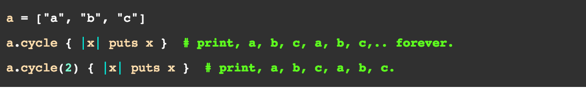
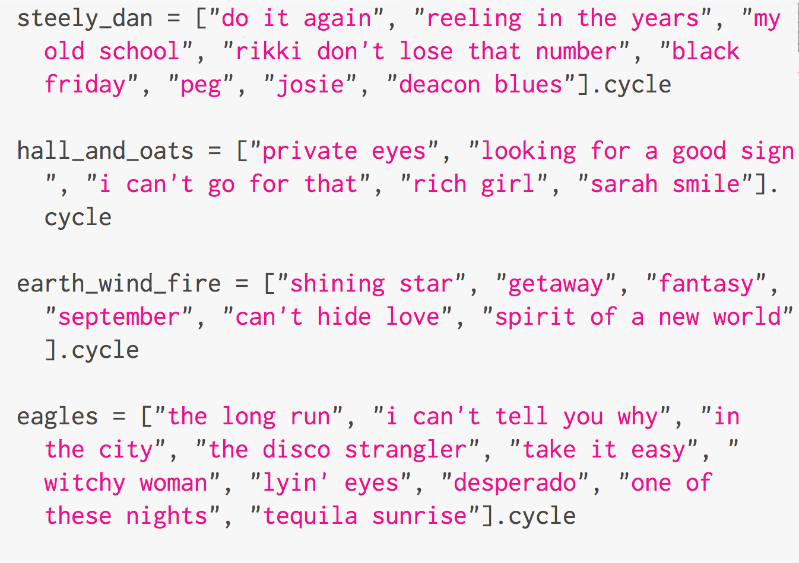
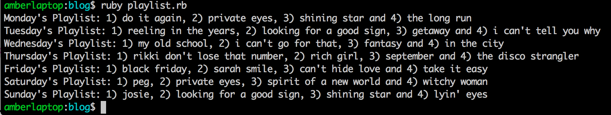

Enumerables
A week of tribute to old classics on vinyl
April 10, 2015

This is my mid-century record cabinet that I scored for $50 at a local vintage furniture shop. Not shown here are 3 crates full of vinyl not yet transferred to the cabinet :)
This is my mid-century record cabinet that I scored for $50 at a local vintage furniture shop. Not shown here are 3 crates full of vinyl not yet transferred to the cabinet :)
Enumerables??
Yeah I know, it sounds like a made-up word that doesn't exist, and one that would get auto-corrected by your phone immediately. It took me a minute to get comfortable with this weird word, but turns out I am going to have to become best friends with enumerables because they are powerful methods in Ruby that allow you to "traverse, search, sort and manipulate collections," i.e., thisngs like arrays and hashes.Cycle
Today I am going to talk about the Enumerable cycle method. In the Ruby documentation, this is the example that they show:  So basically, if you had an array that had the letters "a," "b," and "c" in them, applying the .cycle method to the array would cycle through each item infinitely. That's cool, but what on earth would I use this for?If I were a guest DJ
In Salt Lake City, we have a super cool local radio station called 90.9FM KRCL that is run by volunteers and local sponsors. They play a lot of indie music, great classic rock'n'roll, world music, jazz, etc. Let's pretend I were given a small guest DJ spot on KRCL, where I get to play 4 songs a day for a week, as a tribute to some of my favorite bands from the past. Ok, I'm a musican, not a DJ, but I boast a 3-crate collection of both classic and contemporary vinyl and I LOVE music!! I am going to pick 4 records from my stack:
steely_dan
hall_and_oats
earth_wind_fire
eagles
I am going to make a list of songs from each album.

While I'm at it, I am also going to create an array that cycles through days of the week. Note, I am adding .cycle to the end of the array to save myself some typing.
day = %w { Monday Tuesday Wednesday Thursday Friday Saturday Sunday }.cycle
Make me a playlist!
Now I am going to create a playlist for the 7 days. The .cycle method has a cool thing called .next that you could apply to it, that will move through the next item in the array until you're done cycling through the array.
7.times do
day = day.next
song_1 = steely_dan.next
song_2 = hall_and_oats.next
song_3 = earth_wind_fire.next
puts "#{day}'s Playlist: #{song_1}, #{song_2} and
#{song_3}"
end
The output would look like this (I took a screenshot of the output in my terminal to save some space here)

Since some of the albums ran out of songs, you will notice that on Sunday's playlist, some of the songs were repeated again. I guess that's alright since these are all mega hits. ;)